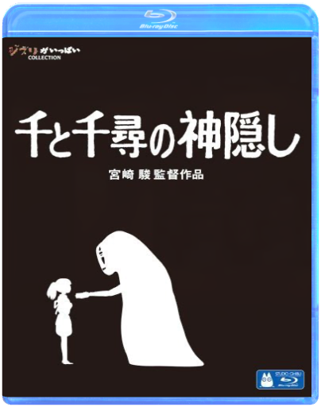
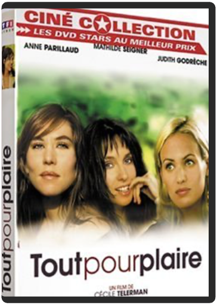

 studio ghibli - 2001 - le voyage de chihirohayao miyazaki  Picture label/special package/w/bonus vid.  The picture in this Blu-ray version is more beautiful than Ghibli DVD movies. Ghibli full COLLECTION Movies directed by Hayao Miyazaki  The picture of Blu-ray version is more beautiful than Ghibli DVD movies. 90 years old living in love. Movies directed by Hayao Miyazaki sweeney todd - édition collectortim burton Edition collector 2 DVD |  T'choupi et ses amis (interactif) - L'intégrale . (Ref: 8284642)  Taxi Driver est le portrait définitif au cinéma de la solitude et de l'aliénation et de leur traduction en violence. C'est comme si le réalisateur Martin Scorsese et son scénariste Paul Schrader avaient puisé exactement à la même source d'inspiration psychologique ("Je savais que je devais faire ce film", dira plus tard Scorsese) combinée à l'expression d'une anxiété individuelle, politique et sociale qui coïncide parfaitement avec l'après-Watergate. Robert De Niro, dans le rôle de Travis Bickle, l'ex-Marine devenu un chauffeur de taxi torturé, marqua l'histoire du cinéma grâce à une interprétation qui fait froid dans le dos tant elle est dense et convaincante. Travis Bickle s'est assigné comme tâche de redresser une humanité qu'il voit comme salie. Il joue à l'ange gardien pour une jeune prostituée (Jodie Foster), rôle dont les conséquences seront d'une violence dévastatrice. Ce chef-d'oeuvre, qui ne plaira pas forcément à tous les spectateurs, en choquera certains, mais il est difficile d'en contester l'importance et l'effet, qui ne se sont pas estompés avec le temps. —Jeff Shannon  Audacieux pari que de traiter une énième fois de la guerre et du Viêtnam, thèmes maintes fois abordés par les plus illustres cinéastes. Néanmoins, avec Tigerland, Joel Schumacher relève brillamment le défi et délivre un film intelligent, original et profondément réaliste. Intelligent en ce qu'il dénonce avec pertinence mais sans excès – non seulement la stupidité et l'inanité de la guerre et de son concept, mais aussi l'incohérence du gouvernement dans ses rapports avec les soldats. Original parce qu'il ne traite pas du conflit en tant que tel, mais de sa phase préparatoire, en mettant l'accent sur les souffrances psychologiques, plus que physiques, endurées par ces très jeunes recrues, enrôlées sans autre choix et transformées, soi-disant pour défendre la noble cause, en machine à tuer. Réaliste en ce que le réalisateur a pris le parti d'avoir recours à des acteurs pour la plupart méconnus (pour éviter toute idée reçue ou préconçue), d'éliminer tout artifice (maquillages, doublures…) et de tourner son film caméra 16 mm à l'épaule, pour accentuer l'aspect documentaire, plonger le spectateur dans l'intimité du camp et l'imprégner au mieux de la confusion et de la perte de repères des garçons, générant ainsi une symbiose rarement atteinte au cinéma. Emmené par une galerie de personnages éclectiques et représentatifs de la société, à commencer par le charismatique mais énigmatique Bozz, jouant habilement des rythmes et des ambiances sans jamais relâcher la tension générale, Tigerland est un témoignage musclé, intense et humain, qui tire avec outrecuidance les leçons d'un passé peu glorieux. —Frédéric Thorens  tout pour plairecécile telerman Trois trentenaires, parisiennes plutôt bourges, qui se posent des questions existentielles, déjà vu ? Peut-être, mais on se laisse vite embarquer à la suite de ces filles au fort capital sympathie, incarnées par des actrices charmantes et généreuses. La réalisatrice a le mérite de ne pas se prendre au sérieux, sans pour autant traiter son sujet à la légère, et donne naissance à des personnages consistants et à un beau trio, entre fous rires et coups de blues, petit frère des bandes de potes chères à Claude Sautet et à Yves Robert. La réussite du film tient aussi à son rythme alerte, enchaînant avec vivacité les dialogues percutants, et sans temps morts qui ne laisse aucun répit. Une comédie intelligente et tout public, comprenez : vivement conseillée aux hommes ! |

Julien
Collection Total:
1 866 Items
1 866 Items
Last Updated:
Feb 24, 2021
Feb 24, 2021


 Made with Delicious Library
Made with Delicious Library